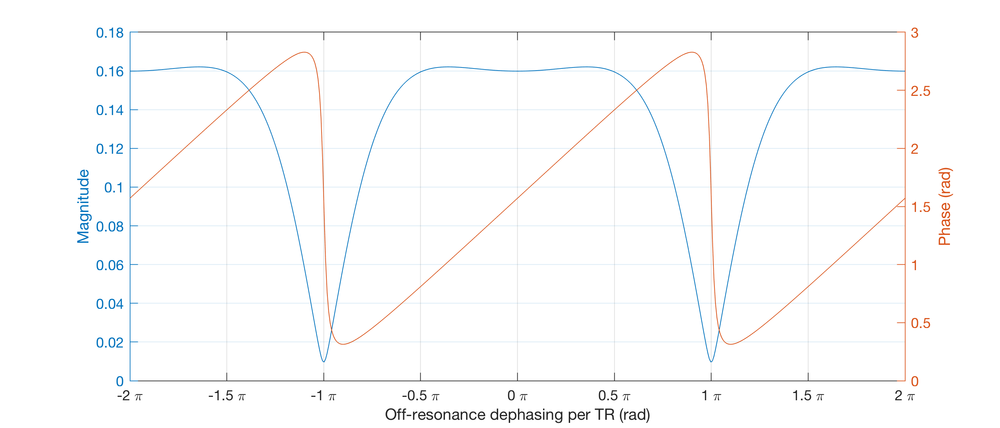
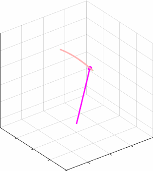
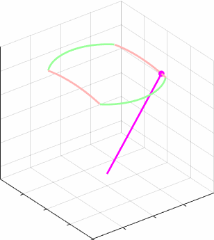
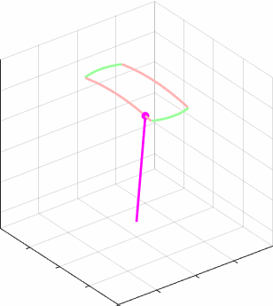
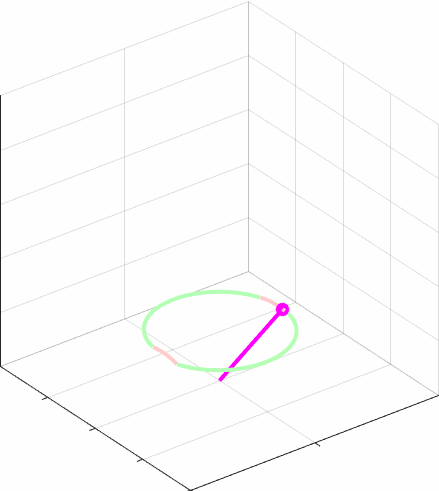
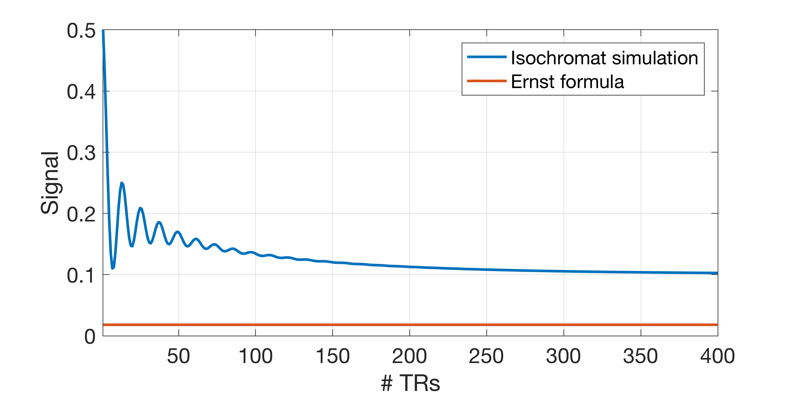
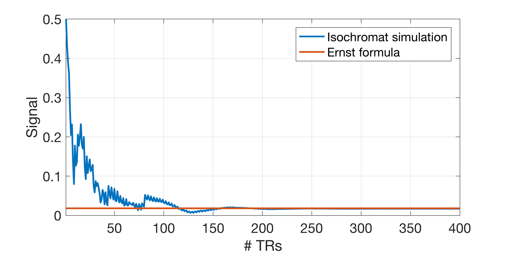
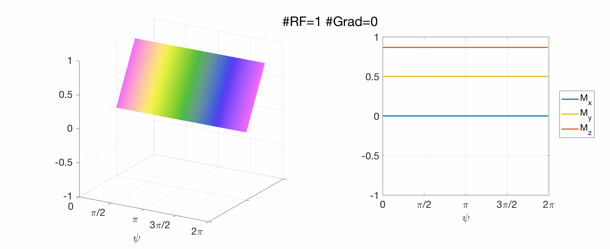

# RF pulse design and simulations: supplementary animations
### Steady state calculations
In lectures we derived a steady-state relationship for an SSFP sequence, which can be illustrated as below for a particular set of tissue and sequence parameters:

We can pick out some of these and animate the motion of a magnetization isochromat depending on the off-resonance dephasing angle (per TR) \\(\psi\\):




### Isochromat ensembles
A simple sequence of RF and gradient pulses, just one isochromat:
<img src="images/iso_sim_3d_single_isochrom.gif" width="70%">
A single isochromat can't characterise the system because in reality we have a
continuous distribution of magnetization at different frequencies. Here's the
same sequence with 100 isochromats:
<img src="images/iso_sim_3d_100_isochroms_STAGGERED.gif" width="100%">
In the diagram above the isochromats are spead out in the direction of the applied gradient - this is a physically realistic picture. We may also draw the vectors on top of one another so that we can directly compare their directions:
<img src="images/iso_sim_3d_100_isochroms.gif" width="100%">
### Simulation of the effect of a single gradient
Simulate transverse magnetization when a gradient is applied.
First using 5 isochromats:
<img src="images/iso_sim_5_isochroms.gif" width="60%">
You see that there are **spurious echoes** when all the magnetisation vectors are aligned. This is unphysical, and these disappear when the number of isochromats is increased. For example, using 100 isochromats:
<img src="images/iso_sim_100_isochroms.gif" width="60%">
### Isochromat simulations including relaxation
Below is the behaviour of 100 isochromats during a gradient echo sequence
without RF spoiling (i.e. spoiling phase = 0) for flip angle 30 degrees, TR=20ms, T1=1000ms and T2=100ms:
<img src="images/GRE_approach_equilibrium.gif" width="100%">
We see that the magnetization slowly reaches the steady state (as a function of \\(\psi\\)) that we predicted analytically.
The steady state doesn't have the properties
that would be predicted by the Ernst equation. This can be seen by comparing the integrated signal over the voxel with the Ernst equation:

The reason is that the TR is not short compared with the T2 so we have imperfect spoiling. This can be improved by using RF phase cycling, as below:
<img src="images/SPGR_approach_equilibrium.gif" width="100%">
which has the following steady state behaviour:

### EPG representation
Magnetisation as a function of space (gradient induced phase offset) and then also as a function of k - the Fourier conjugate variable. This is a simple sequence of RF pulses and gradients. We can see that RF pulses have the effect of rotating all isochromats, while gradients add a rotation that varies over the voxel.

This can be looked at in the k-space domain:
<img src="images/mpsi_vs_mk_v2.gif" width="100%">
Here again we see that the RF pulse mixes Mx, My, Mz but doesn't change the spatial modulation while the gradients do. In the Fourier domain we see that RF pulses mix up coefficients *of a given spatial order*, whereas gradients shift to higher order coefficients.